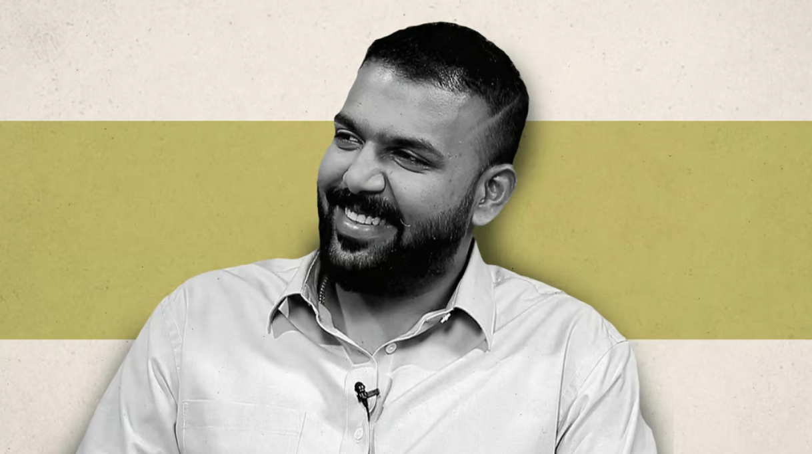
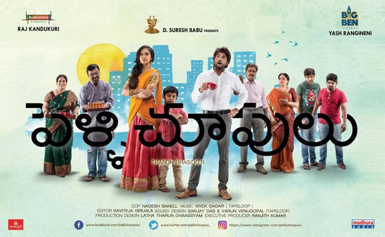
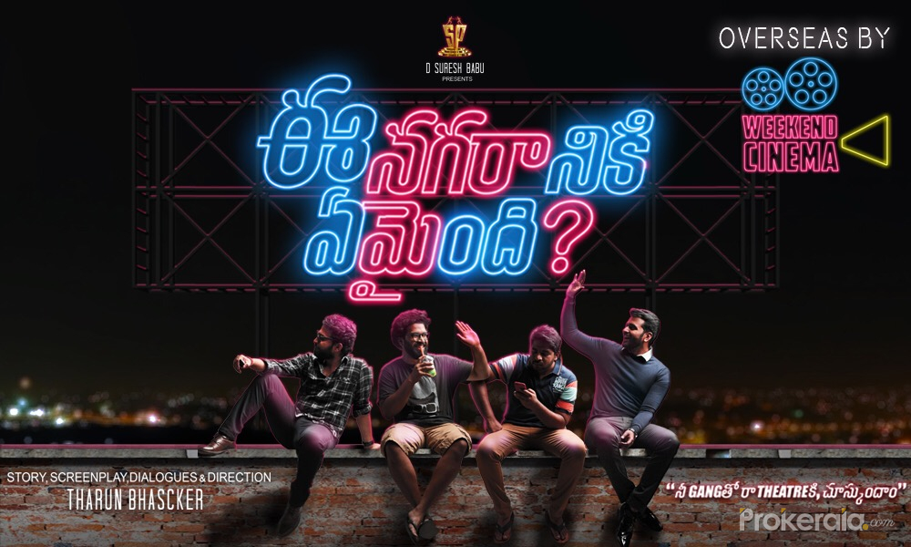

Dear Tharunbascker,
I want to express my deepest gratitude for the incredible impact your work has had on my life. Through your storytelling, you’ve captured emotions that I’ve often struggled to navigate—fear, insecurities, and the profound journey of overcoming them. Watching your films has been like seeing my own thoughts and struggles reflected on screen, and for that, I cannot thank you enough.
Your stories in Pellichoopulu, Enagaraniki Emaindhi, and Keeda-Cola have been nothing short of transformative. Each one felt like a personal guide, gently reminding me that fear and insecurities are part of being human, but they don’t define us. The way your characters rise above their struggles, discovering strength in their vulnerabilities, inspired me to believe in my own resilience.
What resonates even more is your message: “Do what you love.” Those words, both in your films and in your life’s work, are a powerful reminder to follow passion despite fear or doubt. You’ve shown me that authenticity and courage pave the way for a life of purpose, and it’s a lesson I hold close to my heart.
Thank you for creating art that is both deeply personal and universally meaningful. Your ability to tell stories that heal, empower, and inspire is a rare gift, and I’m endlessly grateful for how your work has touched my life.
With admiration and all my appreciation,
~mxdhuuuu


pellichoopulu

Enagaraniki Emaindhi

Keeda-Cola